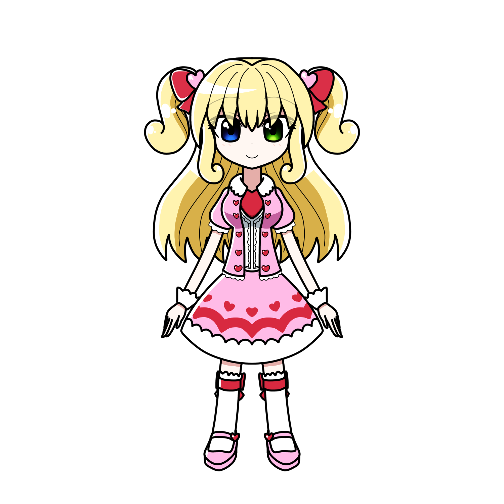

花形 リルン
概要
プロフィール
| 種族 | マリオネット |
|---|---|
| 性別 | 女性 |
| 年齢 | 18歳 |
| 誕生日 | 1月6日 |
| 身長 | 163cm |
| 血液型 | |
| 出身 | |
| イメージカラー | ピンク |
| イメージCV | 花澤香菜 |
人物像
外見
薄い金髪。
右目が青、左目が緑のオッドアイ。
性格
基本的によく笑い、よく怒る
天真爛漫な性格だが、我儘でやや気が強い。
口調
能力
経歴
活躍
人物関係
神崎 デリカ
妹のように可愛がっている。
北城 てつ
自己主張が激しい二人であり
しょっちゅう言い争いをする。